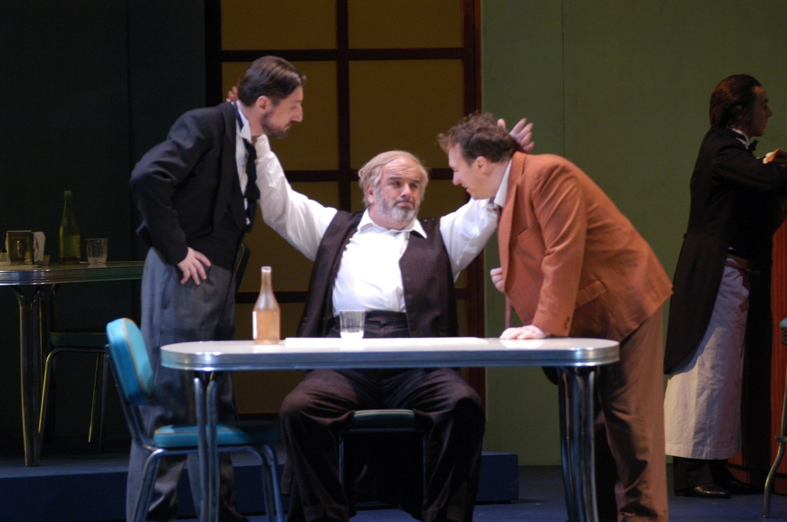
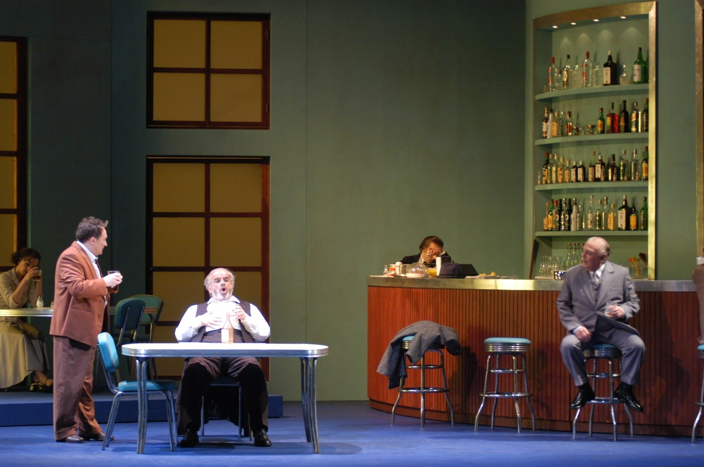
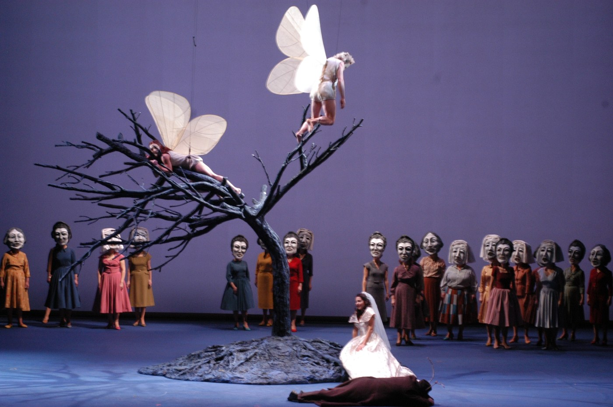
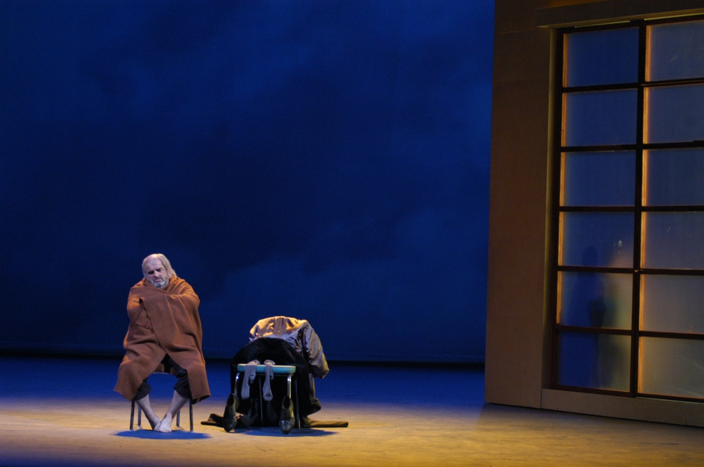
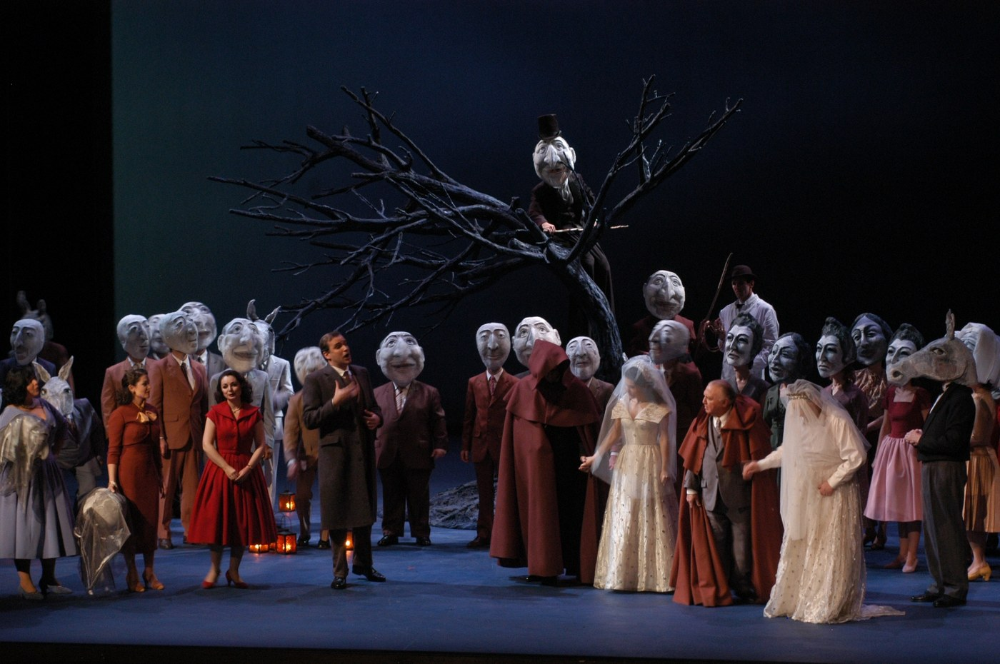
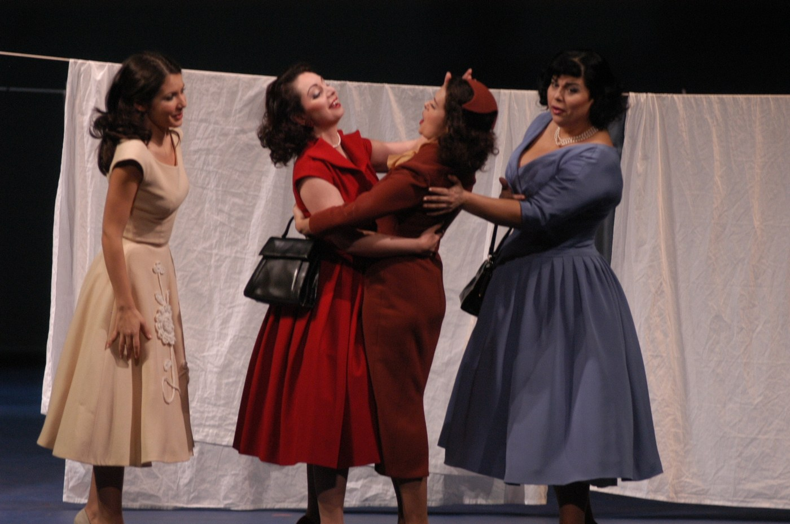
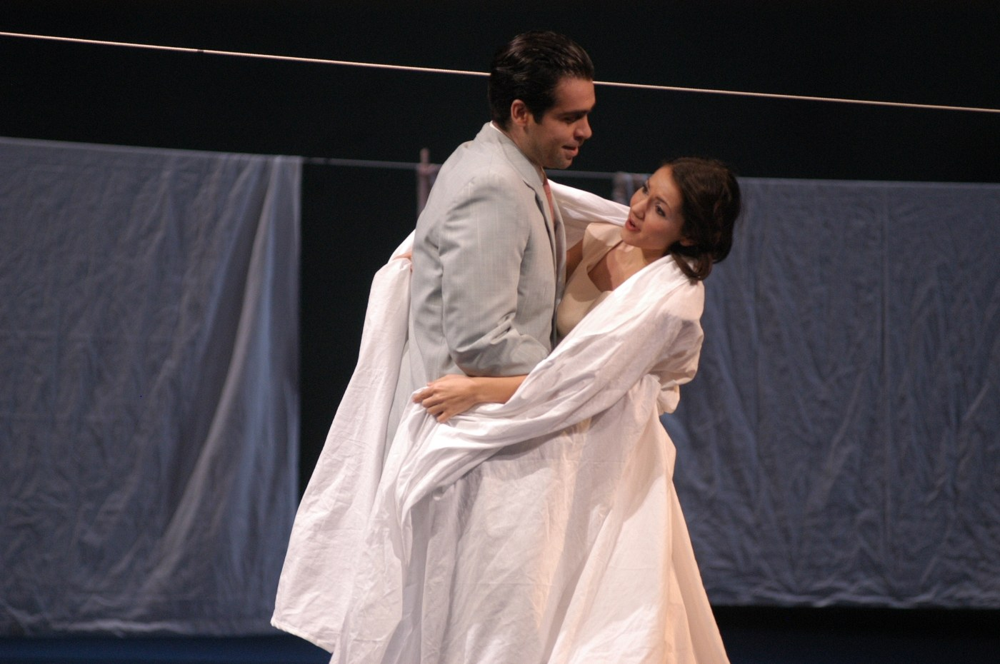
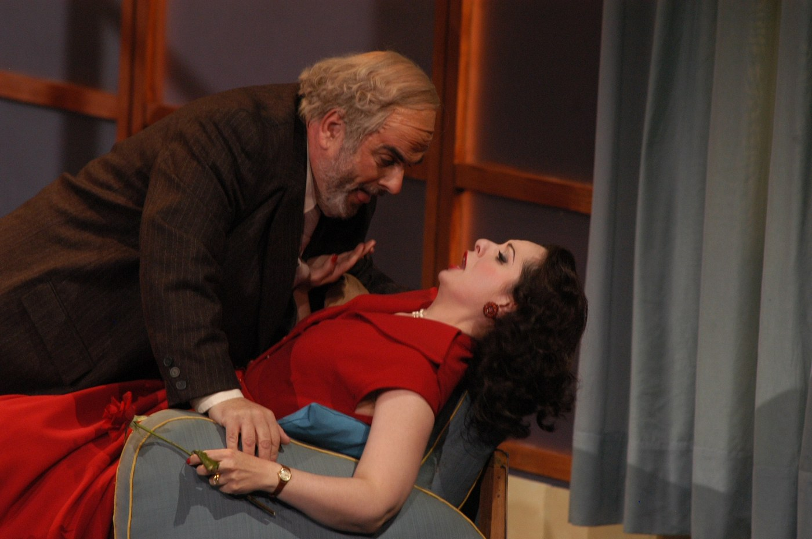
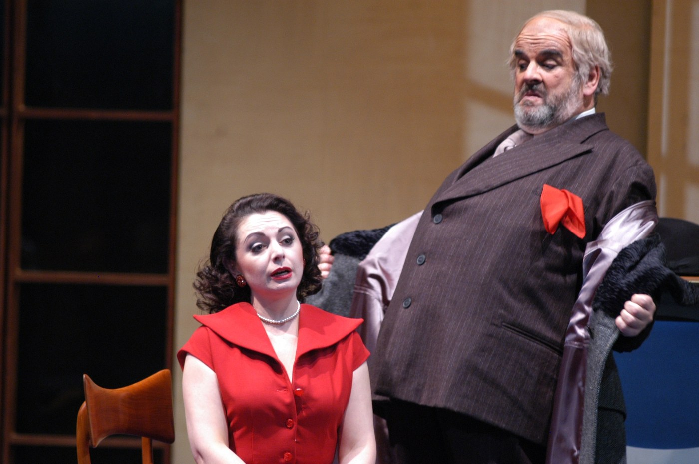
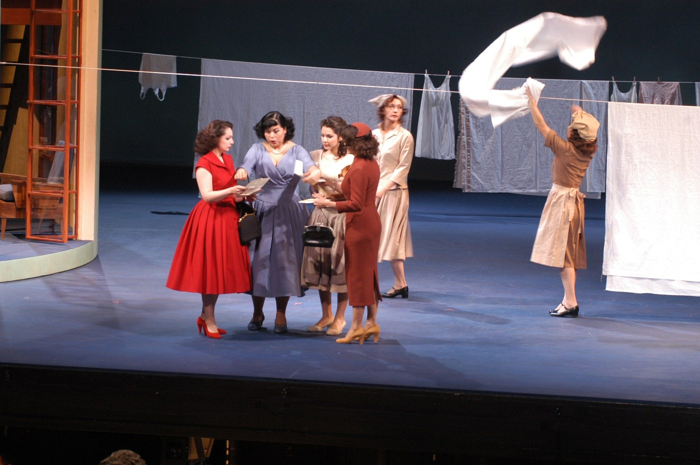

L'ultima opera di Verdi. La risata di un ottantenne che ha spogliato la tragedia di tutto il suo apparato e ha trovato, sotto, la fuga.
Verdi's last opera. The laughter of an eighty-year-old man who has stripped tragedy of all its apparatus and found, beneath, the fugue.
Le dernier opéra de Verdi. Le rire d'un octogénaire qui a dépouillé la tragédie de tout son appareil et a trouvé, dessous, la fugue.
All'Opéra National du Rhin di Strasburgo, Cristian Taraborrelli firma le scene — co-firmate con il regista Giorgio Barberio Corsetti — e i costumi di Falstaff, l'ultima opera di Verdi. Sul libretto di Arrigo Boito (da Shakespeare: Le allegre comari di Windsor e Enrico IV), Verdi ottantenne consegna nel 1893 una commedia musicale che è in realtà un trattato di concentrazione drammatica. Direzione musicale di Giuliano Carella; video-immagini di Fabio Massimo Iaquone; luci di Stefano Foti.
At the Opéra National du Rhin in Strasbourg, Cristian Taraborrelli signs the set — co-signed with director Giorgio Barberio Corsetti — and the costumes of Falstaff, Verdi's last opera. On Arrigo Boito's libretto (from Shakespeare: The Merry Wives of Windsor and Henry IV), the eighty-year-old Verdi delivered in 1893 a musical comedy which is in fact a treatise of dramatic concentration. Conducted by Giuliano Carella; video imagery by Fabio Massimo Iaquone; lighting by Stefano Foti.
À l'Opéra National du Rhin de Strasbourg, Cristian Taraborrelli signe les décors — cosignés avec le metteur en scène Giorgio Barberio Corsetti — et les costumes de Falstaff, dernier opéra de Verdi. Sur le livret d'Arrigo Boito (d'après Shakespeare), Verdi octogénaire livre en 1893 une comédie musicale qui est en réalité un traité de concentration dramatique. Direction musicale : Giuliano Carella ; vidéo : Fabio Massimo Iaquone ; lumières : Stefano Foti.
L'Opera — Il testamento di Verdi
Falstaff debutta al Teatro alla Scala il 9 febbraio 1893. Verdi ha quasi ottant'anni. Dopo l'Otello (1887) ha dichiarato di aver chiuso con il teatro; Boito gli porta una commedia shakespeariana e lo riapre. La partitura è un congegno di velocità vertiginosa: nessuna aria isolata, ensemble continui, recitativi che diventano canto, una fuga finale a dieci voci — «Tutto nel mondo è burla» — con cui Verdi chiude il suo catalogo come Bach chiudeva i suoi: con la forma più rigorosa applicata alla risata.
Il sir John Falstaff — cavaliere obeso, decaduto, vanitoso — tenta di sedurre due donne di Windsor scrivendo loro la stessa lettera d'amore. Le donne si vendicano. Tre atti, sei quadri, una grande beffa notturna nel parco di Windsor che termina in una rivelazione di tenerezza: tutti hanno mentito, tutti sono comici, tutti sono perdonati. La commedia che Verdi scrive non è cinismo, è misericordia musicale: il vecchio compositore mette in musica l'idea che l'umanità sopravvive al ridicolo solo perché lo confessa.
Falstaff premieres at La Scala on 9 February 1893. Verdi is almost eighty. After Otello (1887) he had declared he was finished with theatre; Boito brings him a Shakespearean comedy and reopens him. The score is a device of dizzying speed: no isolated arias, continuous ensembles, recitatives that become song, a final ten-voice fugue — «All the world's a jest» — with which Verdi closes his catalogue as Bach closed his: with the most rigorous form applied to laughter.
Sir John Falstaff — obese, decayed, vain knight — tries to seduce two Windsor women by writing them the same love letter. The women take revenge. Three acts, six tableaux, a great night-time prank in Windsor park ending in a revelation of tenderness: everyone has lied, everyone is comic, everyone is forgiven. The comedy Verdi writes is not cynicism, it is musical mercy: the old composer sets to music the idea that humanity survives the ridiculous only because it confesses it.
Falstaff est créé à la Scala le 9 février 1893. Verdi a presque quatre-vingts ans. Après Otello (1887) il a déclaré en avoir fini avec le théâtre ; Boito lui apporte une comédie shakespearienne et le rouvre. La partition est un dispositif d'une vitesse vertigineuse : aucun air isolé, ensembles continus, récitatifs qui deviennent chant, une fugue finale à dix voix — «Tout au monde n'est que farce» — avec laquelle Verdi clôt son catalogue comme Bach clôturait les siens : par la forme la plus rigoureuse appliquée au rire.
Sir John Falstaff — chevalier obèse, déchu, vaniteux — tente de séduire deux femmes de Windsor en leur écrivant la même lettre d'amour. Les femmes se vengent. Trois actes, six tableaux, une grande farce nocturne dans le parc de Windsor qui se termine sur une révélation de tendresse. La comédie que Verdi écrit n'est pas du cynisme, c'est de la miséricorde musicale.
La Visione — La forma del ridicolo
Corsetti rifiuta la Windsor cartolina (locande, foreste, fate). Cerca uno spazio in cui Falstaff abiti il suo proprio ridicolo geometrico: un'osteria-scatola che si apre come un giocattolo, un parco che diventa quadrante di orologio, una grande luna in cui Falstaff finalmente confessa la propria fragilità.
La scena di Cristian Taraborrelli con Corsetti gioca su strutture mobili che cambiano funzione fra atto e atto: lo stesso pannello è muro di taverna, parete di alcova, tronco di quercia. Le video-immagini di Iaquone non rappresentano paesaggi, rappresentano stati d'animo: la Windsor del primo atto è piena di lettere che svolazzano in proiezione, quella del secondo è un labirinto di porte, quella del terzo si apre nel buio del bosco notturno.
I costumi firmati da Cristian Taraborrelli dichiarano subito la commedia umana: Falstaff in un'armatura sgonfia, le donne in abiti che giocano fra borghesia ottocentesca e maschera elisabettiana, Ford in abiti che si trasformano davanti agli occhi del pubblico quando si traveste in «Mr. Fontana». La produzione di Strasburgo è una partitura visiva di precisione comica, in cui ogni costume cambia per dichiarare la verità del personaggio.
Corsetti refuses the Windsor postcard (inns, forests, fairies). He seeks a space in which Falstaff inhabits his own geometric ridicule: a tavern-box that opens like a toy, a park becoming a clock face, a great moon in which Falstaff finally confesses his fragility.
Cristian Taraborrelli's set with Corsetti plays on mobile structures changing function between acts: the same panel is tavern wall, alcove partition, oak trunk. Iaquone's video imagery does not represent landscapes, it represents states of mind: first-act Windsor is full of fluttering projected letters, the second is a labyrinth of doors, the third opens into the dark night forest.
The costumes signed by Cristian Taraborrelli immediately declare the human comedy: Falstaff in a deflated armour, the women in dresses playing between nineteenth-century bourgeoisie and Elizabethan mask, Ford in clothes that transform before the audience's eyes when he disguises as «Mr Fontana». The Strasbourg production is a visual score of comic precision.
Corsetti refuse la carte postale Windsor. Il cherche un espace dans lequel Falstaff habite son propre ridicule géométrique : une taverne-boîte qui s'ouvre comme un jouet, un parc qui devient cadran d'horloge, une grande lune dans laquelle Falstaff confesse enfin sa fragilité.
La scénographie de Cristian Taraborrelli avec Corsetti joue sur des structures mobiles changeant de fonction entre les actes. Les vidéo-images d'Iaquone ne représentent pas des paysages, mais des états d'âme. Les costumes signés par Cristian Taraborrelli déclarent immédiatement la comédie humaine.
Apparato critico
«Tutto nel mondo è burla. L'uom è nato burlone... Ride ben chi ride la risata final.»
Arrigo Boito — Falstaff, fuga finale Atto III
«A ottant'anni ho dovuto disfare tutto quello che sapevo. Falstaff non si scrive, si dimentica.»
«At eighty I had to undo all I knew. Falstaff is not written, it is forgotten.»
«À quatre-vingts ans il fallait que je défasse tout ce que je savais. Falstaff ne s'écrit pas, il s'oublie.»
Giuseppe Verdi — Lettera a Boito (1892)
Galleria — Foto di scena di Alain Kaiser
Foto di scena della produzione di Strasburgo realizzate da Alain Kaiser, fotografo storico dell’Opéra National du Rhin. La drammaturgia dello spettacolo è raccontata in tre tempi: dalla taverna domestica del Atto I, al gioco di travestimenti dell’Atto II, fino al finale magico nella foresta di Windsor con le fate sul grande albero nudo.
Stage photos of the Strasbourg production by Alain Kaiser, longstanding photographer of the Opéra National du Rhin. From the domestic tavern of Act I, through the masquerades of Act II, to the magical Windsor forest finale with fairies on the great bare tree.
Photos de scène de la production de Strasbourg par Alain Kaiser, photographe historique de l’Opéra National du Rhin.











Foto © Alain Kaiser · Opéra National du Rhin, Strasbourg 2004
Tags
Rassegna Stampa
Materiali di rassegna stampa, recensioni e citazioni della critica disponibili su richiesta.
Press review materials, critical reviews and quotations available upon request.
Documents de revue de presse, critiques et citations disponibles sur demande.
Note di produzione
La produzione s'inscrive nell'arco trentennale del lavoro di Cristian Taraborrelli sulla scena come dispositivo cinetico, mai fondale. Materiali di scena, figurini, bozzetti, prototipi e maquette sono parte dell'archivio dello studio.
The production belongs to the thirty-year arc of Cristian Taraborrelli's work on the stage as a kinetic device, never a backdrop. Stage materials, costume sketches, prototypes and maquettes are part of the studio's archive.
La production s'inscrit dans l'arc trentenaire du travail de Cristian Taraborrelli sur la scène comme dispositif cinétique, jamais décor. Matériaux de scène, figurines, prototypes et maquettes font partie des archives de l'atelier.


Team